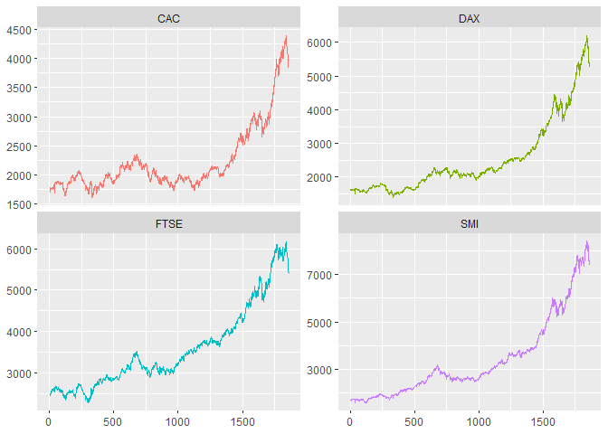
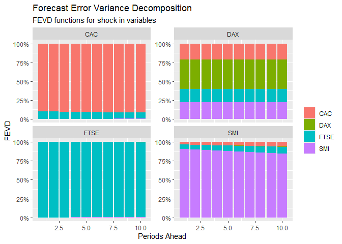
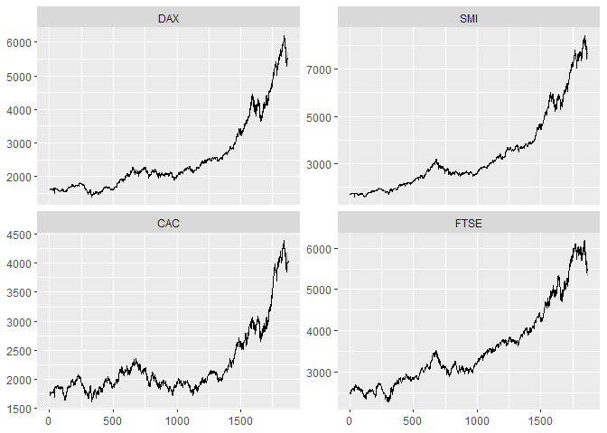
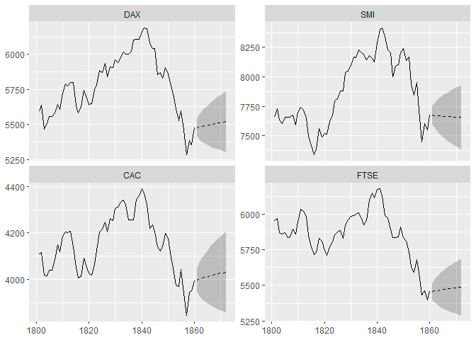

“tidiers” for VAR models
tidyvars is designed to integrate the vars package with the tidyverse ecosystem: it introduces “tidiers” to simplify the analysis of Vector Autoregressive (VAR) Models, following the “tidy data” philosophy. The package makes VAR modelling more accessible and intuitive, especially for old users of broom.
Why Use tidyvars?
Choosing tidyvars for working with VAR Models offers key advantages:
1. Efficient Data Handling: tidyvars converts VAR outputs into a “tidy format” simplifying data manipulation.
2. Tidyverse Integration: tidyvars ensures smooth interoperability with famous tools, like dplyr and ggplot2.
3. Enhanced Interpretability: tidyvars significantly eases the understanding and interpretation of model results.
Installation
You can install the development version of tidyvars from github with:
# install.packages(devtools)
devtools::install_github("https://github.com/Reckziegel/tidyvars")Usage Examples
Effortlessly manipulate, summarize, and augment VAR models using tv_tidy(), tv_glance(), and tv_augment():
library(tidyvars)
library(ggplot2)
mod <- vars::VAR(EuStockMarkets)
# Tidies the VAR model for easier analysis
tv_tidy(mod)
#> # A tibble: 20 x 6
#> group term estimate std.error statistic p.value
#> <chr> <fct> <dbl> <dbl> <dbl> <dbl>
#> 1 DAX DAX.l1 0.975 0.00687 142. 0
#> 2 DAX SMI.l1 0.0119 0.00567 2.10 0.0357
#> 3 DAX CAC.l1 0.0100 0.00570 1.76 0.0789
#> 4 DAX FTSE.l1 0.00310 0.00621 0.500 0.617
#> 5 DAX const -9.13 13.3 -0.687 0.492
#> 6 SMI DAX.l1 -0.00877 0.00846 -1.04 0.300
#> 7 SMI SMI.l1 0.994 0.00698 142. 0
#> 8 SMI CAC.l1 0.00665 0.00702 0.948 0.343
#> 9 SMI FTSE.l1 0.0184 0.00765 2.41 0.0162
#> 10 SMI const -34.8 16.4 -2.12 0.0340
#> 11 CAC DAX.l1 -0.0102 0.00556 -1.84 0.0662
#> 12 CAC SMI.l1 0.00962 0.00459 2.10 0.0363
#> 13 CAC CAC.l1 0.998 0.00461 216. 0
#> 14 CAC FTSE.l1 -0.00260 0.00503 -0.517 0.605
#> 15 CAC const 9.02 10.8 0.838 0.402
#> 16 FTSE DAX.l1 -0.00734 0.00649 -1.13 0.258
#> 17 FTSE SMI.l1 0.0132 0.00536 2.47 0.0137
#> 18 FTSE CAC.l1 -0.00913 0.00538 -1.70 0.0902
#> 19 FTSE FTSE.l1 0.991 0.00587 169. 0
#> 20 FTSE const 28.7 12.6 2.29 0.0224
# Provides a concise summary of the model
tv_glance(mod)
#> # A tibble: 1 x 4
#> lag.order logLik nobs n
#> <dbl> <dbl> <dbl> <dbl>
#> 1 1 -34023. 1859 1860
# Augments the original data with model's details
tv_augment(mod)
#> # A tibble: 7,440 x 5
#> rowid .asset .x .fitted .resid
#> <int> <chr> <dbl> <dbl> <dbl>
#> 1 1 DAX 1629. 1625. -11.2
#> 2 1 SMI 1678. 1676. 12.8
#> 3 1 CAC 1773. 1771. -20.4
#> 4 1 FTSE 2444. 2444. 16.3
#> 5 2 DAX 1614. 1610. -3.48
#> 6 2 SMI 1688. 1686. -7.78
#> 7 2 CAC 1750. 1749. -30.8
#> 8 2 FTSE 2460. 2461. -12.6
#> 9 3 DAX 1607. 1603. 18.5
#> 10 3 SMI 1679. 1676. 7.94
#> # i 7,430 more rowsThe tidyvars functions begins with tv_*() and maintain the same suffix as found in the vars package for consistency.
To evaluate the model’s adherence to standard parametric assumptions use tv_normality_test() and tv_serial_test():
# Tests for multivariate normality of residuals
tv_normality_test(mod)
#> # A tibble: 3 x 5
#> .test .statistic .parameter .p.value .method
#> <chr> <dbl> <dbl> <dbl> <chr>
#> 1 JB 10087. 8 0 JB-Test (multivariate)
#> 2 Skewness 150. 4 0 Skewness only (multivariate)
#> 3 Kurtosis 9938. 4 0 Kurtosis only (multivariate)
# Checks for serial correlation in residuals
tv_serial_test(mod)
#> # A tibble: 4 x 5
#> .test .statistic .parameter .p.value .method
#> <fct> <dbl> <dbl> <dbl> <chr>
#> 1 PT.asymptotic 589. 240 0 Portmanteau Test (asymptotic)
#> 2 PT.adjusted 591. 240 0 Portmanteau Test (adjusted)
#> 3 BG 257. 80 0 Breusch-Godfrey LM test
#> 4 ES 3.29 80 0 Edgerton-Shukur F testTo delve deeper into the causal relationships, see tv_causality():
# Analyzes causal relationships in the VAR model
tv_causality(mod)
#> # A tibble: 8 x 6
#> .asset .test .statistic .parameter .p.value .method
#> <fct> <chr> <dbl> <dbl> <dbl> <chr>
#> 1 DAX granger 1.14 3 0.332 Granger causality H0: DAX do no~
#> 2 SMI granger 2.18 3 0.0882 Granger causality H0: SMI do no~
#> 3 CAC granger 6.24 3 0.000314 Granger causality H0: CAC do no~
#> 4 FTSE granger 4.48 3 0.00377 Granger causality H0: FTSE do n~
#> 5 DAX instant 762. 3 0 H0: No instantaneous causality ~
#> 6 SMI instant 689. 3 0 H0: No instantaneous causality ~
#> 7 CAC instant 705. 3 0 H0: No instantaneous causality ~
#> 8 FTSE instant 650. 3 0 H0: No instantaneous causality ~VAR models are specially useful for forecasting given the ability to capture interdependencies of multiple time series. In tidyvars, this task be easily accomplished with tv_predict():
# Generates forecasts from the VAR model
tv_predict(mod, n.ahead = 1)
#> # A tibble: 4 x 6
#> rowid .asset fcst lower upper CI
#> <int> <chr> <dbl> <dbl> <dbl> <dbl>
#> 1 1 DAX 5478. 5415. 5541. 63.4
#> 2 1 SMI 7674. 7596. 7753. 78.1
#> 3 1 CAC 3998. 3947. 4050. 51.3
#> 4 1 FTSE 5458. 5398. 5518. 59.9
tv_predict(mod, n.ahead = 2)
#> # A tibble: 8 x 6
#> rowid .asset fcst lower upper CI
#> <int> <chr> <dbl> <dbl> <dbl> <dbl>
#> 1 1 DAX 5478. 5415. 5541. 63.4
#> 2 2 DAX 5482. 5393. 5572. 89.4
#> 3 1 SMI 7674. 7596. 7753. 78.1
#> 4 2 SMI 7673. 7562. 7783. 111.
#> 5 1 CAC 3998. 3947. 4050. 51.3
#> 6 2 CAC 4002. 3929. 4074. 72.5
#> 7 1 FTSE 5458. 5398. 5518. 59.9
#> 8 2 FTSE 5462. 5377. 5546. 84.4For more nuanced inferences about the relationships in the model, use tv_fevd() and tv_irf():
# Conducts Forecast Error Variance Decomposition
tv_fevd(mod)
#> # A tibble: 160 x 4
#> rowid .asset .impact .fevd
#> <int> <chr> <chr> <dbl>
#> 1 1 DAX DAX 1
#> 2 1 DAX SMI 0
#> 3 1 DAX CAC 0
#> 4 1 DAX FTSE 0
#> 5 2 DAX DAX 1.00
#> 6 2 DAX SMI 0.0000642
#> 7 2 DAX CAC 0.0000178
#> 8 2 DAX FTSE 0.00000200
#> 9 3 DAX DAX 1.00
#> 10 3 DAX SMI 0.000212
#> # i 150 more rows
# Computes Impulse Response Functions
tv_irf(mod)
#> # A tibble: 176 x 6
#> rowid .impulse .asset .irf .lower .upper
#> <int> <chr> <chr> <dbl> <dbl> <dbl>
#> 1 1 DAX DAX 32.4 29.7 34.8
#> 2 1 DAX SMI 29.8 26.8 33.1
#> 3 1 DAX CAC 19.5 17.9 21.1
#> 4 1 DAX FTSE 20.8 19.1 22.4
#> 5 2 DAX DAX 32.2 29.5 34.4
#> 6 2 DAX SMI 29.8 26.9 33.1
#> 7 2 DAX CAC 19.4 17.6 21.0
#> 8 2 DAX FTSE 20.6 18.8 22.3
#> 9 3 DAX DAX 32.0 29.4 34.1
#> 10 3 DAX SMI 29.9 27.1 33.2
#> # i 166 more rows
# IRF from Blanchard-Quah Decomposition
tv_irf(vars::BQ(mod))
#> # A tibble: 176 x 6
#> rowid .impulse .asset .irf .lower .upper
#> <int> <chr> <chr> <dbl> <dbl> <dbl>
#> 1 1 DAX DAX 5.23 -9.08 21.8
#> 2 1 DAX SMI 8.49 -12.1 33.7
#> 3 1 DAX CAC -8.84 -12.8 16.0
#> 4 1 DAX FTSE 12.9 -17.2 27.3
#> 5 2 DAX DAX 5.15 -9.10 21.8
#> 6 2 DAX SMI 8.58 -12.3 33.9
#> 7 2 DAX CAC -8.82 -12.7 16.0
#> 8 2 DAX FTSE 12.9 -17.2 27.2
#> 9 3 DAX DAX 5.08 -9.12 21.7
#> 10 3 DAX SMI 8.66 -12.5 34.0
#> # i 166 more rowsThe functions tv_fevd() and tv_irf() are particularly useful for understanding how shocks to one variable might propagate through the system and impact other variables over time.
Plotting
tidyvars integrates the autoplot() method for most functions to enhance the user experience with a quick and intuitive visual representation of model outputs.
See some examples bellow:
# Fitted Model
autoplot(tv_augment(mod))


# Generates visual forecasts
autoplot(tv_predict(mod, n.ahead = 12))
# Zoom in the forecasts (last 3 months)
autoplot(tv_predict(mod, n.ahead = 12), .n_obs = 60)